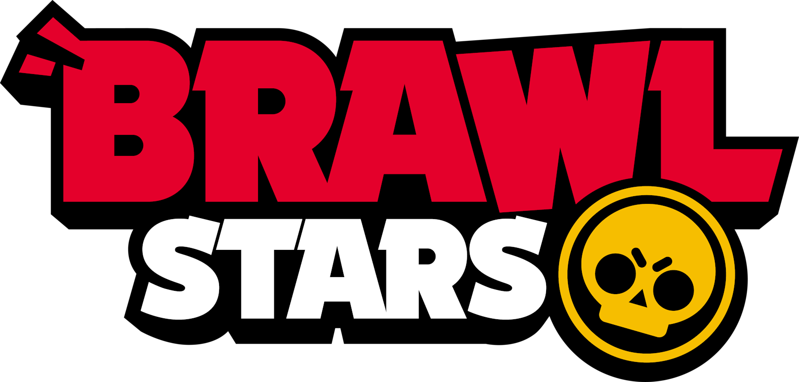

按定位分类，而不是堆数值
火力输出、重装坦克、远程射手、控制投掷、辅助治疗——先判断英雄在队伍里承担什么，再谈伤害高低。

从初始的雪莉到传奇的斯派克，这里把 24 位常见英雄按定位、稀有度和 上手难度梳理清楚：他们怎么打、什么时候选、容易踩哪些坑。 再加模式解析与上分思路，帮你更快找到自己的主力英雄。
官方宣传图 · 版权归 Supercell 所有
Why this site
数值会随版本改动，但“这个英雄该怎么用”很少变。本站围绕这一点组织内容。
火力输出、重装坦克、远程射手、控制投掷、辅助治疗——先判断英雄在队伍里承担什么，再谈伤害高低。
每位英雄都有攻击方式、超级技能、上手难度和一句实战提醒，读完就能决定要不要练。
宝石争霸要控中场、金库攻防要拆墙——不同模式的胜负条件不同，选人思路自然也不同。
Site map
四个分页面，从英雄本身一路讲到模式与养成。
Featured
分别覆盖近战爆发、远程消耗、团队续航与正面开团，适合作为第一批练的英雄。

雪莉Shelly
初始英雄，霰弹贴脸伤害极高，超级技能还能击退并拆除掩体，是最适合学习走位与掩体利用的角色。

斯派克Spike
仙人掌飞刺在命中处炸开，能隔着掩体消耗；超级技能的减速区域是团战里非常好用的分割工具。

帕姆Pam
散射弹幕压制力稳定，超级技能放下治疗台后，队友可以长时间守住中路，是稳健阵容的常客。

弗兰肯Frank
血量厚、锤击范围大，超级技能的震地眩晕能直接开启团战；代价是攻击前摇明显，需要队友跟上。